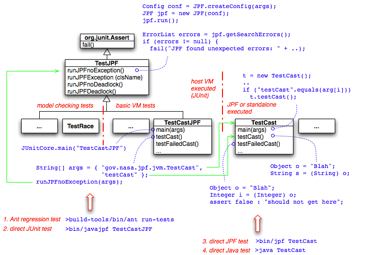

As a complex runtime system for (almost) arbitrary Java programs, it goes without saying that JPF needs a solid set of regression tests. The test system is located in a separate test directory tree (see Directory Structure), and contains two major branches:
(1) core VM functionality - this deals with standard JVM functions like class loading and initialization, field access, method invocation and exception handling. This is the most populated category of JPF tests, but still lacks a lot of coverage.
(2) model checking functionality - tests in this category should exercise JPF's state management, mostly state-storage, state-matching and backtracking. Other sub-categories especially include different search strategies. Counting the number of states (i.e. mostly partial order reduction testing) will be another emphasis (that hasn't been started yet).
All tests follow the same scheme, which is motivated by the need to run tests in a number of different ways:
The rationale for this is to support various levels of inspection and debugging. Consequently, each test is separated into a JUnit test driver and a corresponding raw test

Figure 1: regression test structure
(1) Junit test driver - this test component runs JPF on the raw test, and uses JUnit to report the outcome of the test run (so that the test can be part of an automatically executed test suite). This involves three tasks for the programmer
public class MyTestJPF extends gov.nasa.jpf.jvm.TestJPF {..}
public static void main (String[] args) { JUnitCore.main("MyTestJPF"); }
@Test //(a) public void testX (){ String[] args = { "vm.finalize=true", "MyTest", "testX" }; //(b) runJPFException(args, "java.lang.NullPointerException"); //(c) }
Usually, the raw test application method to be analyzed is named like this method itself (e.g. testX(), but this is only a convention(2) Raw test application - this is a normal Java program that is to be execued by JPF. There are only two design constraints
public static void main (String[] args) { MyTest t = new MyTest(); .. if ("testX".equals(args[i]) t.testX(); .. }
public void testX() {..}
While there is no strict need to have a 1:1 correspondence of test driver and raw test class, this scheme is used in existing JPF tests. The driver usually has the same name like the raw test class with an ..JPF suffix.
Execution of the whole test suite is done via the provided Ant build.xml script, target run-tests (see Building JPF from the Command Line). If the test driver should run stand alone, the user has to make sure that JPF and JUnit are in the classpath. There are no caveats if running the raw test application either via JPF or directly.
Please note that as of 07/01/2006, the stable Ant release v1.6.5 does not handle JUnit 4.1 tests. In order to use JPFs JUnit 4.1 based regression tests, you have to use a more recent Ant version (e.g. from http://svn.apache.org/repos/asf/ant/core/trunk). For your convenience, we provide such a snapshot in build-tools/lib